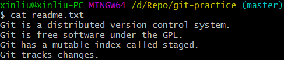
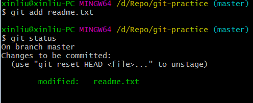
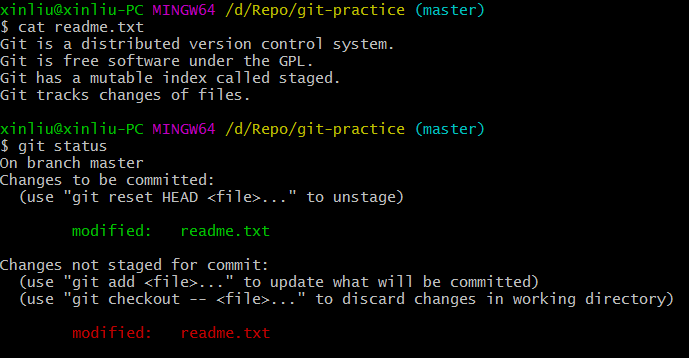
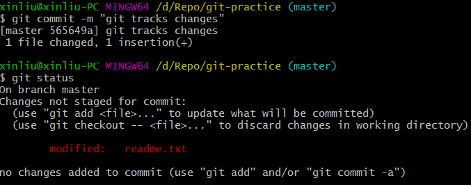
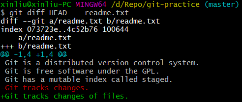

下面，我们讨论：git 如何提交修改。
(1) 先对 readme.txt 做个修改，加上一行内容：

(2) 使用命令git add，把readme.txt添加到暂存区，用git status查看一下：

(3) 再修改 readme.txt，用git status查看一下：

(4) 使用命令git commit提交暂存区到仓库，用git status再查看一下：

(5) 使用命令git diff HEAD -- readme.txt查看工作区和版本库里面最新版本的区别：

咦，怎么第二次的修改没有被提交？回顾一下我们的操作过程：第一次修改 -> git add -> 第二次修改 -> git commit
①在工作区的第一次修改被放入暂存区，准备提交;
②接着工作区又进行了修改，但是并没有添加到暂存区，就直接进行了提交。
那怎么提交第二次修改呢？同第一次提交一样，继续git add再git commit，现在就把第二次修改提交了。
第一次修改 -> git add -> 第二次修改 -> git add -> git commit